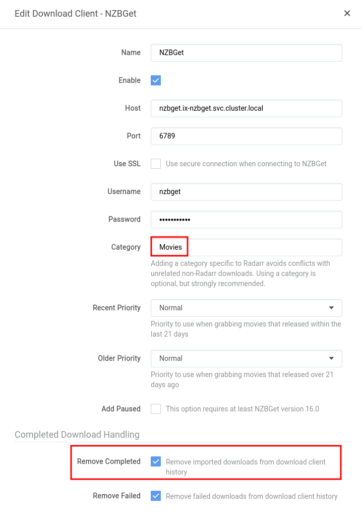
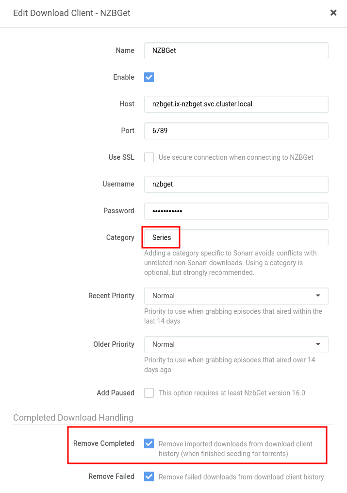
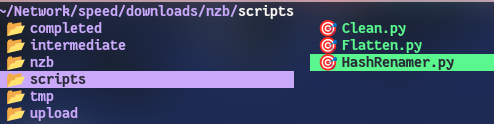

In App Settings
Keep in mind, these are just my personal settings, if you are wanting a more in-depth example, check out TRaSH Guides: NZBGet Documentation
Paths¶
MainDir
/nzb
ScriptDir
${MainDir}/scripts
Security¶
ControlPassword
NEWPASSWORD
- set this to something I will personally use
AuthorizedIP
127.0.0.1,192.168.0.*,172.16.*.*
- This field is separated by commas.
- I added my Lan on there
192.168.0.* - As well as the kubernetes Network
172.16.*.*
Catagories¶
I use 5 catagories
Moviesis used by:
Radarr
- I also always enable
Remove Completedfor NZBs

Seriesis used by:
Sonarr
- I also always enable
Remove Completedfor NZBs

Musicis used by:
Lidarr
- I also always enable
Remove Completedfor NZBs

-
Manualis ignored by all of my applications and only for my personal use -
Mangais for Komga- Komga doesn't automatically import, I just decided to give it its own category anyway
While creating these catagories, I ONLY changed the name, no other field was changed, the files once completed, will still go into their own directory as shown below.

Extension Scripts¶
Extensions
Clean.py, HashRenamer.py, Flatten.py
Script Order
Clean.py, Flatten.py, HashRenamer.py
As long as the scripts are in your scripts directory you should be set

Here is the code for the extensions I use, make sure to copy and paste them with the .py extensions and place them into your scripts folder
Clean.py
More info can be found by TRaSH Guides
#!/usr/bin/env python3
#
##############################################################################
### NZBGET SCAN SCRIPT ###
# Clean NZB name.
#
# Removes the following suffixes from NZB name:
# NZBgeek / Obfuscated / BUYMORE / Scrambled.
#
# NOTE: This script requires Python to be installed on your system.
### NZBGET SCAN SCRIPT ###
##############################################################################
from __future__ import print_function
import os, re, sys
# Exit codes used by NZBGet
POSTPROCESS_SUCCESS=93
POSTPROCESS_ERROR=94
POSTPROCESS_SKIP=95
# Check if the script is called from NZBGet 13.0 or later
if not 'NZBOP_SCRIPTDIR' in os.environ:
print('*** NZBGet post-processing script ***')
print('This script is supposed to be called from NZBGet (13.0 or later).')
sys.exit(POSTPROCESS_ERROR)
if not 'NZBNP_NZBNAME' in os.environ:
print('[WARN] Filename not found in environment')
sys.exit(POSTPROCESS_ERROR)
fwp = os.environ['NZBNP_NZBNAME']
fwp = re.sub('(?i)-4P\.nzb$', '.nzb', fwp)
fwp = re.sub('(?i)-4Planet\.nzb$', '.nzb', fwp)
fwp = re.sub('(?i)-AsRequested\.nzb$', '.nzb', fwp)
fwp = re.sub('(?i)-AsRequested-xpost\.nzb$', '.nzb', fwp)
fwp = re.sub('(?i)-BUYMORE\.nzb$', '.nzb', fwp)
fwp = re.sub('(?i)-Chamele0n\.nzb$', '.nzb', fwp)
fwp = re.sub('(?i)-GEROV\.nzb$', '.nzb', fwp)
fwp = re.sub('(?i)-iNC0GNiTO\.nzb$', '.nzb', fwp)
fwp = re.sub('(?i)-NZBGeek\.nzb$', '.nzb', fwp)
fwp = re.sub('(?i)-Obfuscated\.nzb$', '.nzb', fwp)
fwp = re.sub('(?i)-postbot\.nzb$', '.nzb', fwp)
fwp = re.sub('(?i)-Rakuv\.nzb$', '.nzb', fwp)
fwp = re.sub('(?i)-Scrambled\.nzb$', '.nzb', fwp)
fwp = re.sub('(?i)-WhiteRev\.nzb$', '.nzb', fwp)
fwp = re.sub('(?i)-xpost\.nzb$', '.nzb', fwp)
fwp = re.sub('(?i)\[eztv\]\.nzb$', '.nzb', fwp)
fwp = re.sub('(?i)\[TGx\]\.nzb$', '.nzb', fwp)
fwp = re.sub('(?i)\[TGx\]-xpost\.nzb$', '.nzb', fwp)
fwp = re.sub('(?i)\[ettv\]\.nzb$', '.nzb', fwp)
fwp = re.sub('(?i)-WRTEAM\.nzb$', '.nzb', fwp)
fwp = re.sub('(?i)-CAPTCHA\.nzb$', '.nzb', fwp)
fwp = re.sub(r'(\-[^-.\n]*)(\-.{4})?\.nzb$', r'\1.nzb', fwp)
if fwp:
print('[NZB] NZBNAME=', fwp, sep='')
sys.exit(POSTPROCESS_SUCCESS)
Flatten.py
This removes all of the sub-folders created by the unpack process
More info can be found on the GitHub source
#!/usr/bin/env python
#
##############################################################################
### NZBGET POST-PROCESSING SCRIPT ###
# Flatten all downloaded files into the root download directory.
#
# This removes all of the sub-folders created by the unpack process.
# This should run before other scripts.
#
# NOTE: This script requires Python to be installed on your system.
##############################################################################
### OPTIONS ###
# Destination Directory.
#
# Set the directory where you want all files to be moved to.
# Use this if you want all downloaded files in a single "root" directory.
# If left blank, files will all be "flattened" into the individual download's sub-directory.
#DestinationDirectory=
# Append Categories (yes, no).
#
# If using the Destination Directory above, then this option will append the download category.
#AppendCategories=no
### NZBGET POST-PROCESSING SCRIPT ###
##############################################################################
import os
import sys
import shutil
# NZBGet Exit Codes
NZBGET_POSTPROCESS_PARCHECK = 92
NZBGET_POSTPROCESS_SUCCESS = 93
NZBGET_POSTPROCESS_ERROR = 94
NZBGET_POSTPROCESS_NONE = 95
if 'NZBOP_SCRIPTDIR' not in os.environ:
print("This script can only be called from NZBGet (11.0 or later).")
sys.exit(0)
if os.environ['NZBOP_VERSION'][0:5] < '11.0':
print("[ERROR] NZBGet Version %s is not supported. Please update NZBGet." % (str(os.environ['NZBOP_VERSION'])))
sys.exit(0)
print("Script triggered from NZBGet Version %s." % (str(os.environ['NZBOP_VERSION'])))
status = 0
if 'NZBPP_TOTALSTATUS' in os.environ:
if not os.environ['NZBPP_TOTALSTATUS'] == 'SUCCESS':
print("[ERROR] Download failed with status %s." % (os.environ['NZBPP_STATUS']))
status = 1
else:
# Check par status
if os.environ.get('NZBPP_PARSTATUS') == '1' or os.environ.get('NZBPP_PARSTATUS') == '4':
print("[ERROR] Par-repair failed, setting status \"failed\".")
status = 1
# Check unpack status
if os.environ.get('NZBPP_UNPACKSTATUS') == '1':
print("[ERROR] Unpack failed, setting status \"failed\".")
status = 1
if os.environ.get('NZBPP_UNPACKSTATUS') == '0' and os.environ.get('NZBPP_PARSTATUS') == '0':
# Unpack was skipped due to nzb-file properties or due to errors during par-check
if os.environ.get('NZBPP_HEALTH') < 1000:
print("[ERROR] Download health is compromised and Par-check/repair disabled or no .par2 files found. Setting status \"failed\".")
print("[ERROR] Please check your Par-check/repair settings for future downloads.")
status = 1
else:
print("[ERROR] Par-check/repair disabled or no .par2 files found, and Unpack not required. Health is ok so handle as though download successful.")
print("[WARNING] Please check your Par-check/repair settings for future downloads.")
# Check if destination directory exists (important for reprocessing of history items)
if not os.path.isdir(os.environ.get('NZBPP_DIRECTORY')):
print("[ERROR] Nothing to post-process: destination directory", os.environ['NZBPP_DIRECTORY'], "doesn't exist. Setting status \"failed\".")
status = 1
# All checks done, now launching the script.
if status == 1:
sys.exit(NZBGET_POSTPROCESS_NONE)
def removeEmptyFolders(path, removeRoot=True):
#Function to remove empty folders
if not os.path.isdir(path):
return
# remove empty subfolders
print("[INFO] Checking for empty folders in:%s" % path)
files = os.listdir(path)
if len(files):
for f in files:
fullpath = os.path.join(path, f)
if os.path.isdir(fullpath):
removeEmptyFolders(fullpath)
# if folder empty, delete it
files = os.listdir(path)
if len(files) == 0 and removeRoot:
print("[INFO] Removing empty folder:%s" % path)
os.rmdir(path)
directory = os.path.normpath(os.environ.get('NZBPP_DIRECTORY'))
if os.environ.get('NZBPO_DESTINATIONDIRECTORY', False) and os.path.isdir(os.environ.get('NZBPO_DESTINATIONDIRECTORY')):
destination = os.environ.get('NZBPO_DESTINATIONDIRECTORY')
if os.environ.get('NZBPO_APPENDCATEGORIES') == 'yes':
destination = os.path.join(destination, os.environ.get('NZBPP_CATEGORY'))
else:
destination = directory
print("Flattening directory: %s" % (directory))
for dirpath, dirnames, filenames in os.walk(directory):
for fileName in filenames:
outputFile = os.path.join(dirpath, fileName)
if dirpath == destination:
continue
target = os.path.join(destination, fileName)
try:
shutil.move(outputFile, target)
except:
print("[ERROR] Could not flatten %s" % outputFile)
removeEmptyFolders(directory) # Cleanup empty directories
sys.exit(NZBGET_POSTPROCESS_SUCCESS)
HashRenamer.py
More info can be found by TRaSH Guides
#!/usr/bin/env python3
#
##############################################################################
# Title: HashRenamer.py #
# Author(s): l3uddz, desimaniac #
# URL: https://github.com/l3uddz/nzbgetScripts #
# Description: Renames hashed media files to match the source NZB. #
# -- #
# Part of the Cloudbox project: https://cloudbox.works #
##############################################################################
##############################################################################
# Built on top of the NZBGet scripts template created by Clinton Hall #
# (https://github.com/clinton-hall). #
# Released under GNU General Public License v2.0 #
##############################################################################
##############################################################################
### NZBGET POST-PROCESSING SCRIPT ###
# Rename files with hashes for file name
#
# NOTE: This script requires Python to be installed on your system.
#
##############################################################################
### NZBGET POST-PROCESSING SCRIPT ###
##############################################################################
import os
import re
import shutil
import sys
# NZBGet Exit Codes
NZBGET_POSTPROCESS_PARCHECK = 92
NZBGET_POSTPROCESS_SUCCESS = 93
NZBGET_POSTPROCESS_ERROR = 94
NZBGET_POSTPROCESS_NONE = 95
############################################################
# EXTENSION STUFF
############################################################
def do_check():
if 'NZBOP_SCRIPTDIR' not in os.environ:
print("This script can only be called from NZBGet (11.0 or later).")
sys.exit(0)
if os.environ['NZBOP_VERSION'][0:5] < '11.0':
print("[ERROR] NZBGet Version %s is not supported. Please update NZBGet." % (str(os.environ['NZBOP_VERSION'])))
sys.exit(0)
print("Script triggered from NZBGet Version %s." % (str(os.environ['NZBOP_VERSION'])))
status = 0
if 'NZBPP_TOTALSTATUS' in os.environ:
if not os.environ['NZBPP_TOTALSTATUS'] == 'SUCCESS':
print("[ERROR] Download failed with status %s." % (os.environ['NZBPP_STATUS']))
status = 1
else:
# Check par status
if os.environ['NZBPP_PARSTATUS'] == '1' or os.environ['NZBPP_PARSTATUS'] == '4':
print("[ERROR] Par-repair failed, setting status \"failed\".")
status = 1
# Check unpack status
if os.environ['NZBPP_UNPACKSTATUS'] == '1':
print("[ERROR] Unpack failed, setting status \"failed\".")
status = 1
if os.environ['NZBPP_UNPACKSTATUS'] == '0' and os.environ['NZBPP_PARSTATUS'] == '0':
# Unpack was skipped due to nzb-file properties or due to errors during par-check
if os.environ['NZBPP_HEALTH'] < 1000:
print("[ERROR] Download health is compromised and Par-check/repair disabled or no .par2 files found. " \
"Setting status \"failed\".")
print("[ERROR] Please check your Par-check/repair settings for future downloads.")
status = 1
else:
print("[ERROR] Par-check/repair disabled or no .par2 files found, and Unpack not required. Health is " \
"ok so handle as though download successful.")
print("[WARNING] Please check your Par-check/repair settings for future downloads.")
# Check if destination directory exists (important for reprocessing of history items)
if not os.path.isdir(os.environ['NZBPP_DIRECTORY']):
print("[ERROR] Nothing to post-process: destination directory", os.environ[
'NZBPP_DIRECTORY'], "doesn't exist. Setting status \"failed\".")
status = 1
# All checks done, now launching the script.
if status == 1:
sys.exit(NZBGET_POSTPROCESS_NONE)
def get_file_name(path):
try:
file_name = os.path.basename(path)
extensions = re.findall(r'\.([^.]+)', file_name)
ext = '.'.join(extensions)
name = file_name.replace(".%s" % ext, '')
return name, ext
except Exception:
pass
return None
def is_file_hash(file_name):
hash_regexp = [
r'^[a-fA-F0-9]{40}$',
r'^[a-fA-F0-9]{32}$',
r'^[a-f0-9]{128}$',
r'^[a-zA-Z0-9]{42}$'
]
for hash in hash_regexp:
if re.match(hash, file_name):
return True
return False
def find_files(folder, extension=None, depth=None):
file_list = []
start_count = folder.count(os.sep)
for path, subdirs, files in os.walk(folder, topdown=True):
for name in files:
if depth and path.count(os.sep) - start_count >= depth:
del subdirs[:]
continue
file = os.path.join(path, name)
if not extension:
file_list.append(file)
else:
if file.lower().endswith(extension.lower()):
file_list.append(file)
return sorted(file_list, key=lambda x: x.count(os.path.sep), reverse=True)
############################################################
# MAIN
############################################################
# do checks
do_check()
# retrieve required variables
directory = os.path.normpath(os.environ['NZBPP_DIRECTORY'])
nzb_name = os.environ['NZBPP_NZBFILENAME']
if nzb_name is None:
print("[ERROR] Unable to retrieve NZBPP_NZBFILENAME")
sys.exit(NZBGET_POSTPROCESS_ERROR)
nzb_name = nzb_name.replace('.nzb', '')
print(("[INFO] Using \"%s\" for hashed filenames" % nzb_name))
print(("[INFO] Scanning \"%s\" for hashed filenames" % directory))
# scan for files
found_files = find_files(directory)
if not found_files:
print(("[INFO] No files were found in \"%s\"" % directory))
sys.exit(NZBGET_POSTPROCESS_NONE)
else:
print(("[INFO] Found %d files to check for hashed filenames" % len(found_files)))
# loop files checking for file hash
moved_files = 0
for found_file_path in found_files:
# set variable
dir_name = os.path.dirname(found_file_path)
file_name, file_ext = get_file_name(found_file_path)
# is this a file hash
if is_file_hash(file_name):
new_file_path = os.path.join(dir_name, "%s.%s" % (nzb_name, file_ext))
print(("[INFO] Moving \"%s\" to \"%s\"" % (found_file_path, new_file_path)))
try:
shutil.move(found_file_path, new_file_path)
moved_files += 1
except Exception:
print(("[ERROR] Failed moving \"%s\" to \"%s\"" % (found_file_path, new_file_path)))
print(("[INFO] Finished processing \"%s\", moved %d files" % (directory, moved_files)))
sys.exit(NZBGET_POSTPROCESS_SUCCESS)